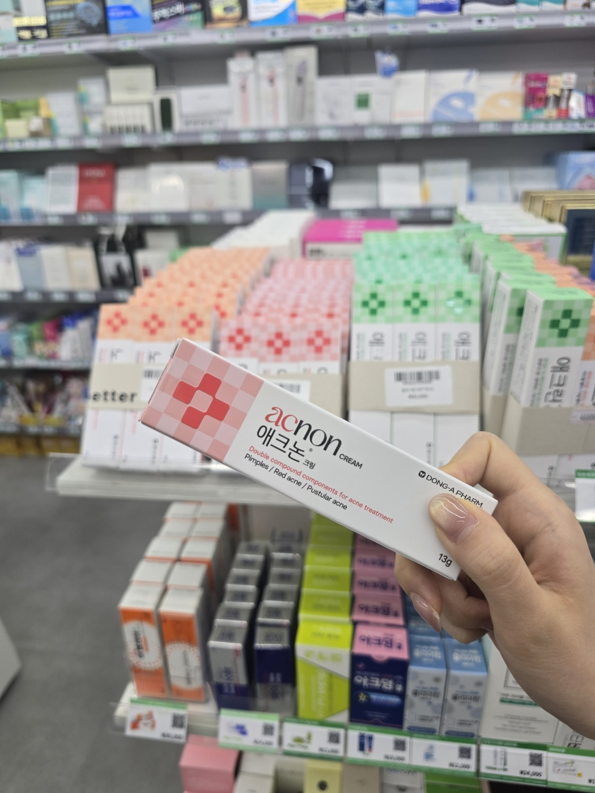
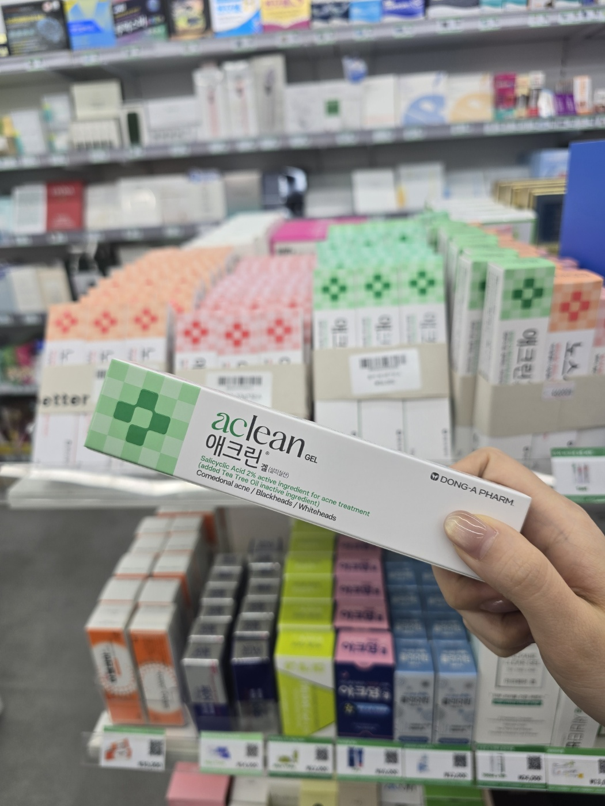
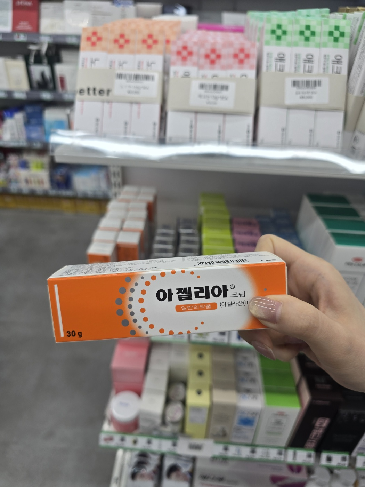
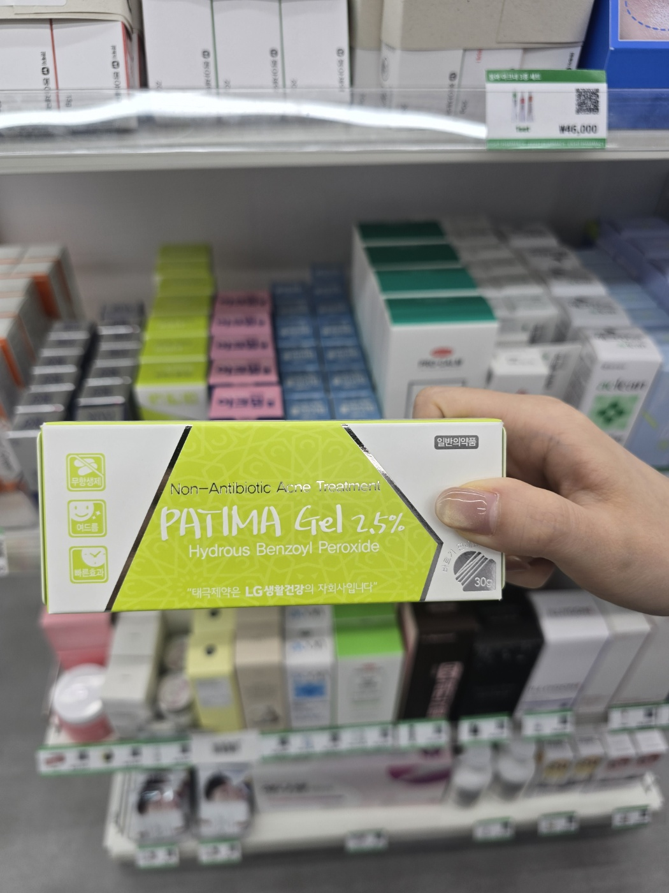
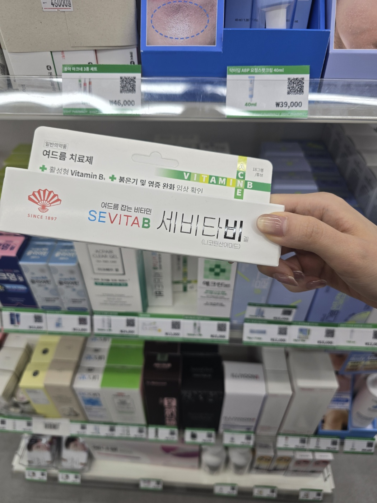
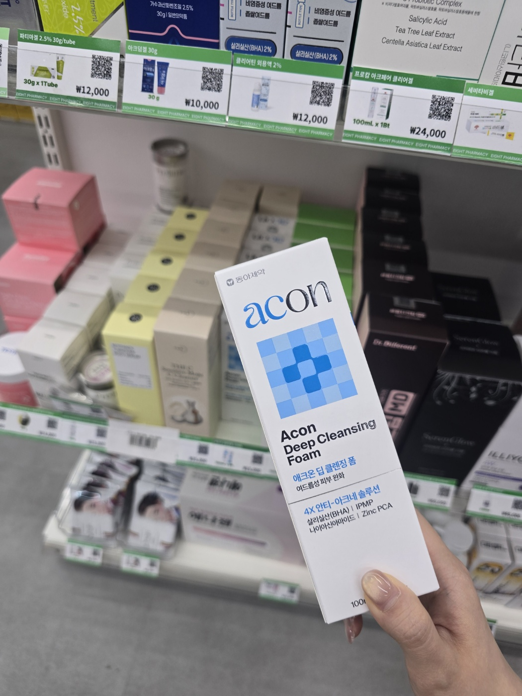

Not all acne is the same. A Korean pharmacist breaks down exactly which ingredient to reach for — by type.
ニキビはすべて同じではありません。韓国薬剤師が、タイプ別に本当に合う成分を解説します。
痘痘并不都是一样的。韩国药剂师按类型分析，告诉你该选哪种成分。
痘痘並不都是一樣的。韓國藥劑師按類型分析，告訴你該選哪種成分。
Don't chase the most famous ingredient. Find the one that actually matches your acne type — that's the fastest route to clearer skin.
一番有名な成分を追いかけるのではなく、自分のニキビタイプに合う成分を見つけることが、最短ルートです。
不要追最有名的成分，而是找到真正适合你痘痘类型的成分——这才是通向清透肌肤的最快路径。
不要追最有名的成分，而是找到真正適合你痘痘類型的成分——這才是通向清透肌膚的最快路徑。
6 types · 6 ingredients · clinical-grade reasoning
6タイプ · 6成分 · 薬剤師の視点
6种类型 · 6种成分 · 药剂师视角
6種類型 · 6種成分 · 藥劑師視角

When acne turns red and painful, an inflammatory reaction is occurring inside the pore. Ibuprofen Piconol directly targets inflammatory mediators to reduce redness and swelling — making it the go-to choice the moment a blemish flares.
ニキビが赤く腫れて痛む原因は、毛穴内部の炎症反応です。イブプロフェンピコノールは炎症メディエーターに直接作用し、赤みと腫れをしっかり抑えます。
痘痘发红疼痛，是因为毛孔内部发生了炎症反应。布洛芬吡可酯直接作用于炎症介质，有效缓解红肿，是痘痘爆发时的首选。
痘痘發紅疼痛，是因為毛孔內部發生了炎症反應。布洛芬吡可酯直接作用於炎症介質，有效緩解紅腫，是痘痘爆發時的首選。

As a lipophilic BHA, salicylic acid is uniquely able to penetrate into sebum — dissolving the keratin plug that blocks pores. It reduces comedone formation before blemishes even appear.
BHA（ベータヒドロキシ酸）は脂溶性のため、皮脂の中まで浸透できます。毛穴を塞ぐ角栓を溶かし、ニキビが発生する前に面皰形成を防ぎます。
作为脂溶性BHA，水杨酸能深入皮脂，溶解堵塞毛孔的角栓，在痘痘形成前阻止粉刺的产生。
作為脂溶性BHA，水楊酸能深入皮脂，溶解堵塞毛孔的角栓，在痘痘形成前阻止粉刺的產生。

Azelaic acid is arguably the most versatile acne ingredient — it fights active blemishes while simultaneously preventing the dark marks (PIH) they leave behind, via tyrosinase inhibition.
アゼライン酸は最も多機能なニキビ成分のひとつ。現在のニキビを改善しながら、チロシナーゼ阻害によって色素沈着（PIH）の予防も同時にできます。
壬二酸是最多效的痘痘成分之一，既能改善现有痘痘，又能通过抑制酪氨酸酶阻止痘印（PIH）的形成。
壬二酸是最多效的痘痘成分之一，既能改善現有痘痘，又能透過抑制酪胺酸酶阻止痘印（PIH）的形成。

BPO releases oxygen inside the pore, creating an anaerobic environment where Cutibacterium acnes cannot survive. Unlike antibiotics, resistance is virtually never an issue — and the AAD names it a cornerstone acne treatment.
BPOは毛穴内に酸素を放出し、Cutibacterium acnesが生存できない嫌気性環境を作ります。抗生物質と違い耐性がほぼ生じず、AADもコア成分として推奨しています。
过氧化苯甲酰在毛孔内释放氧气，创造出痤疮丙酸杆菌无法存活的缺氧环境。与抗生素不同，几乎不产生耐药性，也是AAD推荐的核心治痘成分。
過氧化苯甲醯在毛孔內釋放氧氣，創造出痤瘡丙酸桿菌無法存活的缺氧環境。與抗生素不同，幾乎不產生抗藥性，也是AAD推薦的核心治痘成分。

A Vitamin B3 derivative that regulates sebum production and strengthens the skin barrier. Multiple clinical studies confirm meaningful sebum reduction in oily skin — with the bonus of brightening and anti-inflammatory effects.
ビタミンB3誘導体で、皮脂分泌を調節し肌バリアを強化します。複数の臨床研究で脂性肌の皮脂減少効果が確認されており、美白・抗炎症効果も期待できます。
维生素B3衍生物，可调节皮脂分泌并强化皮肤屏障。多项临床研究证实对油性肌肤有明显控油效果，同时兼具美白和抗炎功效。
維生素B3衍生物，可調節皮脂分泌並強化皮膚屏障。多項臨床研究證實對油性肌膚有明顯控油效果，同時兼具美白和抗炎功效。

Even the best active ingredients underperform without proper cleansing. But over-cleansing is equally harmful — it strips the barrier and paradoxically worsens acne. The ideal acne cleanser removes excess sebum and debris while preserving barrier integrity.
どんなに優れた成分も、洗顔が正しくなければ力を発揮できません。一方、過剰な洗顔は肌バリアを破壊し、かえってニキビを悪化させます。ニキビ肌用クレンザーは「皮脂除去」と「バリア維持」のバランスが命です。
再好的成分，洁面不到位效果也会大打折扣。但过度清洁同样有害，会破坏皮肤屏障，反而使痘痘加重。理想的痘痘肌洁面产品需在「去除多余皮脂」与「维持皮肤屏障」之间取得平衡。
再好的成分，潔臉不到位效果也會大打折扣。但過度清潔同樣有害，會破壞皮膚屏障，反而使痘痘加重。理想的痘痘肌潔臉品需在「去除多餘皮脂」與「維持皮膚屏障」之間取得平衡。